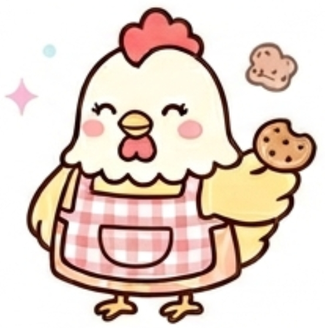

あなたのフレンドタイプは...

BSAH：”あいつ”のかあちゃん
あなたは、グループのメンバー全員に対して、まるで家族のような深い愛と気配りを持って接する「精神的支柱」です。自分から目立つようなお喋りをしたり、笑いの中心になろうとしたりすることはなく、常に「みんなが無理をしていないか」「本当に楽しめているか」を、言葉にせずとも察知できる並外れた包容力と高い共感能力を持っています。
基本的には穏やかで、全員のどんな話も「うんうん」と受け止める聞き上手ですが、単なるお人好しではありません。自分が余計な発言をして空気を悪くすることを恐れる繊細さがあるからこそ、逆にグループの和を乱すような失礼な行動 or 誰かを傷つけるような行き過ぎたノリに対しては、毅然とした態度で「それはダメだよ」と優しく引き戻せる、強い芯を持っています。
友達から見たあなたは、ズバリ「どんなに場が暴走しても、実家のような安心感で元の空気に戻してくれるオカン」です。
みんなが自分の話したいことを一斉に捲し立てたり、トゲのあるいじり合いで不穏な空気が流れそうになったりしたとき、あなたは一歩引いたところから全員の話をしっかり聞いています。そして、場がグダグダになったりギスギスしそうになったりした瞬間、「まぁまぁ、みんな落ち着きなよ」「ほら、お腹空いてるからそんなトゲトゲするんだよ、何か食べよ！」と割って入るだけで、一瞬で場が丸く収まります。友達は、あなたの前では子供のように素真面目になってしまい、不思議と反論する気が起きません。
遊びに行くときも、あなたが「みんな忘れ物ない？」とさりげなく声をかけてくれる姿に、友達は圧倒的な安心感を覚えています。全員があなたのその聞き上手な優しさと、ここぞという時の軌道修正能力にリスペクトを込めて、グループに絶対にいなくてはならない「最後の砦」として深く信頼し、愛しています。
感情的にならず、両方の言い分をフラットに聞いた上で、お互いが納得する温かい解決策を提示してくれます。あなたがいれば、グループが崩壊することは絶対にありません。
他の人には言えないような情けない悩みや失敗も、自分の話にすり替えたりせず、最後まで「大変だったね」と寄り添ってくれるため、最高の心の安全地帯になっています。
あなたの放つウェルカムなオーラが、個性の強いメンバーたちを一つに繋ぎ止める接着剤になっています。
あなたの「みんなをケアして、場を穏やかに戻す」というスタンスは素晴らしいですが、時にそれが周りにとって「ちょっと過保護で、お節介な小言」に聞こえてしまうことがあります。友達がただの愚痴として聞いてほしいだけなのに、あなたが全体のバランスを気にするあまり「それじゃダメだよ」「もっとこうしなさい」と正論の説教をしてしまうと、相手は「親と同じこと言われてるみたいでダルいな……」と引いてしまいます。
また、周りはあなたを「頼れるオカン」だと思い込んでいるため、あなたが今どんなに疲れていても、ついついあなたを頼り、すべての面倒事を押し付けてしまいがちです。
みんなの話を聞いてあげるだけでなく、たまには「あー！今日はみんなが私の話を聞く番！かあちゃん定休日！」と、自分から弱音を吐いたり甘えたりする姿を見せてください。友達はいつもお世話になっているあなたに恩返しができる絶好のチャンスだと大喜びし、より対等で居心地の良い関係が築けるようになります。